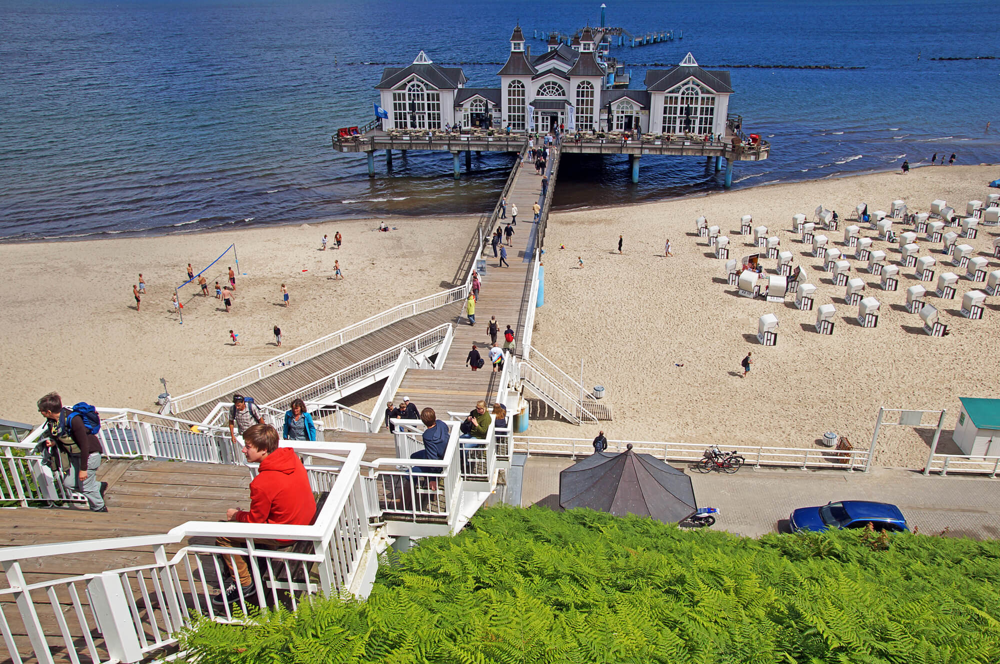
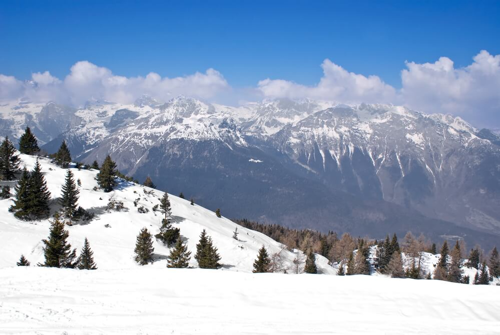

Куди поїхати у Німеччині
Мрієте поїхати до Німеччини? tripmydream підкаже найкращі міста для екскурсійного, морського чи гірськолижного відпочинку.
Де можна відпочити в Німеччині?
Вибираючи для себе відпочинок у Німеччині, вам доведеться вибирати, куди поїхати. Вибрати непросто, адже великі території Німеччини виходять і до моря, і до гір. Тут можна знайти безліч озер і мінеральних джерел. Не кажучи вже про те, що міста Німеччини є справжньою скарбницею творів мистецтв. Так що вирішуючи, куди поїхати в Німеччині, варто вибрати мету свого подорожі. Інакше всієї краси буде просто не охопити.
Екскурсійні міста Німеччини
Німеччина - країна з глибокою історією, дух якої зберігся в багатьох містах, у стінах замків та в витворах мистецтва. Майже у кожному місті Німеччини знайдеться, на що подивитися. Але є міста, частина яких в жодному разі не можна обійти увагу, інакше Німеччину ви так і не впізнаєте.
- Берлін
- Мюнхен
- Гамбург
- Кельн
- Дюсельдорф
- Ганновер
- Бремен
- Дрезден
- Нюрнберг
- Лейпциг
- Потсдам
- Штутгарт
- Франкфурт
Пляжні курорти Німеччини
Німеччина відрізняється строгими звичаями, не дарма педантичність і чинність Німці увійшли в легенди по всьому світу. І морський відпочинок тут цілком відповідає духу країни. Адже пляжі Німеччини знаходяться на березі Балтійського та Північного морів, з дуже непростим кліматом. Однак, німецьке морське узбережжя безперечно варте того, щоб побувати на ньому. Адже тут ви знайдете цілюще морське повітря, хвойні ліси на березі та чудові піщані пляжі. Тож вам неодмінно варто відвідати пляжні курорти Німеччини.
- Острів Рюген
- Перерів
- Узедом
- Травемюнде
- Острів Амрум
- Острів Зюльт
- Острів Хіддензей
- Тіммендорф
- Санкт-Петер-Ордінг
Гірськолижні курорти Німеччини
Якщо ви фанат зимових видів спорту, іскристого снігу та швидкісних спусків, то Німеччина – ваш вибір. Тутешні гори подарували світові лижників чимало радості, та гірськолижні курорти чекають на своїх гостей протягом усієї холодної пори року.
- Гарміш
- Бертехсгаден
- Райт-ім-Вінкль
- Оберстдорф
- Оберхів